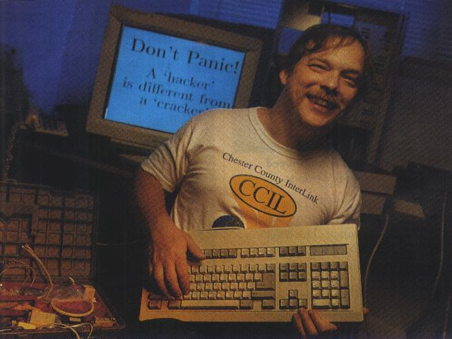

Software Livre
Lucas S. Vieira
Quem Sou Eu?
- Sistemas de Informação (2018)
- Engenharia de Computação (2012 a 2016)
- *nix (Linux, BSDs, Plan 9)
- Gamedev (principalmente engines); Game Design
Sumário
- O que é Software Livre?
- História do Software Livre
- História do Código Aberto
- Licenças FOSS Comuns e Populares
O que é Software Livre?
"Usuários têm a liberdade de executar, copiar, distribuir, estudar, mudar e melhorar o software"
Quatro Liberdades Essenciais
- L0: Executar o programa como quiser, para qualquer propósito;
- L1: Estudar como o programa funciona, e modificá-lo para que faça sua computação como você desejar;
- L2: Redistribuir cópias para que você possa ajudar aos outros;
- L3: Distribuir cópias de suas versões modificadas para os outros.
História do Software Livre
Richard M. Stallman

- MIT Artificial Intelligence Lab (1971 a 1980)
- Unix, C, Lisp
Debugar e melhorar, não apenas operar
Projeto GNU (1984)

- GNU C Compiler
Free Software Foundation (1985)

GNU Hurd
- Tentativa de replicar o UNIX
- Userland: Completada rapidamente
- Kernel: Baseado em Mach; demanda mais tempo
- Desenvolver o Hurd dá trabalho…
Linus Torvalds e Linux (1991)


- Userland GNU (+ compiladores para desenvolvimento)
- Mundialmente utilizado
Apache HTTP Server (1995)

- Difusão do uso de Linux
- Difusão do uso de Software Livre
Movimento Open Source
Eric S. Raymond

- The Cathedral and the Bazaar
Netscape Communications Corporation
- Netscape Communicator como Software Livre
Open Source Initiative (1998)

- Eric S. Raymond e outros hackers em Palo Alto
- Slogan mais apelativo a companias
- Sugerido por Christine Peterson

- Crescimento da Red Hat, Inc.
- Impulsionamento do Linux e do Open Source
- Sun Microsystems lança OpenOffice como software de código aberto
Extras e Curiosidades
Berkeley Software Distribution (BSD)

- NetBSD e FreeBSD
- Respectivos forks: OpenBSD, DragonflyBSD
MacOS (OS X 10+)
- NeXTSTEP (OS e Workstations)

- Usa código do projeto BSD
- Kernel: Baseado no Mach, como o Hurd
Licenças FOSS Comuns e Populares
Licença MIT
- Permitido: Uso comercial, distribuição, modificação, uso privado;
- Vetado: Responsabilização, garantia;
- Condições: Redistribuição da licença e nota de copyright.
Software que utiliza: Babel, .NET Core, Rails, Reveal.js
Licença BSD (2-clause)
- Mesmas permissões, vetos e condições da MIT
- Exige que usuários incluam a nota a respeito de garantia
- Porém, menos explícita em poucos pontos (sublicenciamento, vendas)
Software que utiliza: Pony, FreeBSD
GNU General Public License (v3)
Compatível com uma ampla gama de licenças
- Permitido: Uso comercial, distribuição, modificação, delegação de patente, uso privado;
- Vetado: Responsabilização, garantia;
- Condições: Distribuição do código-fonte, redistribuição da licença e nota de copyright, uso da mesma licença, listagem de mudanças.
Software que utiliza: Bash, GIMP, Emacs
GNU Affero GPL (v3)

Compatível com GPLv3
- "Uso em rede é distribuição"
- O usuário deve ter acesso ao código-fonte
GNU Lesser GPL (v3)

Compatível com GPLv3
- "GPL para bibliotecas": Menos restritiva
- O "trabalho" inteiro não precisa ter a licença LGPL
Licença Apache (2.0)
- Compatível com GPLv3
- Permitido: Uso comercial, distribuição, modificação, delegação de patente, uso privado;
- Vetado: Responsabilização, uso de trademark, garantia;
- Condições: Distribuição do código-fonte, redistribuição da licença e nota de copyright, uso da mesma licença, listagem de mudanças.
Software que utiliza: Kubernetes, PDF.js, Swift
Domínio Público / Unlicense
- Permitido: Uso comercial, distribuição, modificação, uso privado;
- Vetado: Responsabilização, garantia;
- Condições: Nenhuma.
Software que utiliza: youtube-dl, cabeçalhos stb
Sem Licença
- "Licença" sem cláusula alguma
- Subentendem-se as permissões, limitações e condições do Domínio Público
- …mas não pode ser legalmente operada
What The F*** Public License
- Minimalista ao extremo (uma cláusula) e tom jocoso
- Compatível com GPL
- Aprovada, mas não-recomendada pela FSF
- Rejeitada pela OSI: "(…) não é diferente de Domínio Público (…)"
- Apesar dos pesares, é uma LICENÇA
- Direitos são expressamente dados;
- Uma licença jocosa é melhor que nenhuma.
Considerações Finais
Fontes
- FREE SOFTWARE FOUNDATION. What is Free Software?. Disponível em: <https://www.gnu.org/philosophy/free-sw.en.html>
- FREE SOFTWARE FOUNDATION. Various Licenses and Comments About Them. Disponível em: <https://www.gnu.org/licenses/license-list.html>
- GITHUB. Choose an Open Source License. Disponível em: <https://choosealicense.com/>
- LINUX.ORG. GNU Userland. Disponível em: <https://www.linux.org/threads/gnu-userland.11066/>
- OPENGIFT.IO. 'Software is meant to be free.' A Brief History of Open Source. Disponível em: <https://medium.com/@opengift/software-is-meant-to-be-free-a-brief-history-of-open-source-3bb2364a5f82>
- REVOLUTION OS. Direção: J.T.S. Moore, 2001 (85 min).
- WIKIPEDIA. Apache HTTP Server. Disponível em: <https://en.wikipedia.org/wiki/Apache_HTTP_Server>
- WIKIPEDIA. BSD Licenses. Disponível em: <https://en.wikipedia.org/wiki/BSD_licenses>
- WIKIPEDIA. GNU Hurd. Disponível em: <https://en.wikipedia.org/wiki/GNU_Hurd>
- WIKIPEDIA. History of Free and Open Source Software. Disponível em: <https://en.wikipedia.org/wiki/History_of_free_and_open-source_software>
- WIKIPEDIA. History of Linux. Disponível em: <https://en.wikipedia.org/wiki/History_of_Linux>